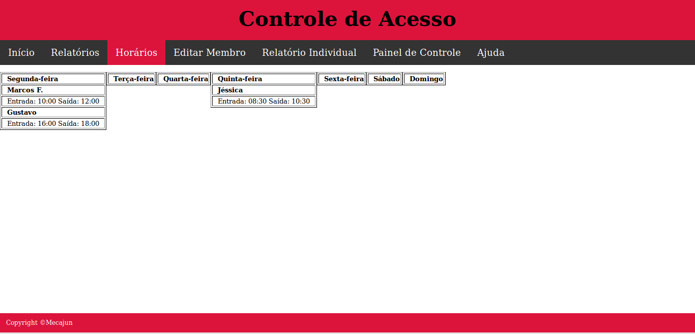
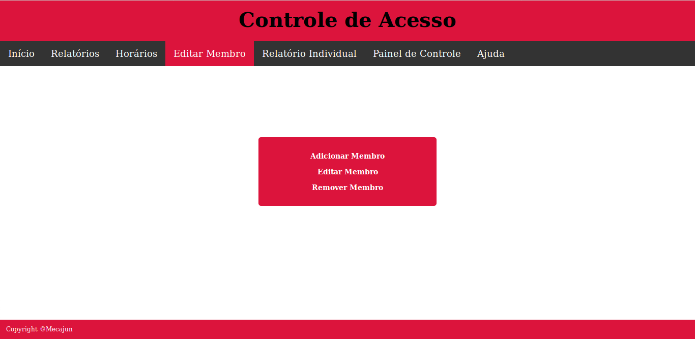
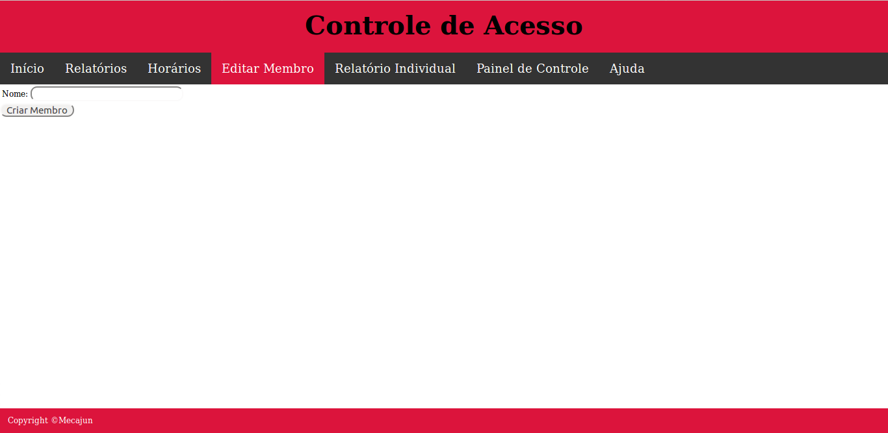
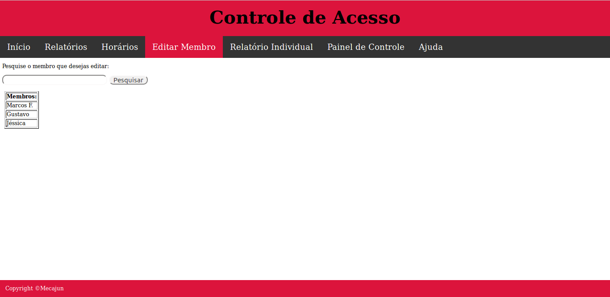
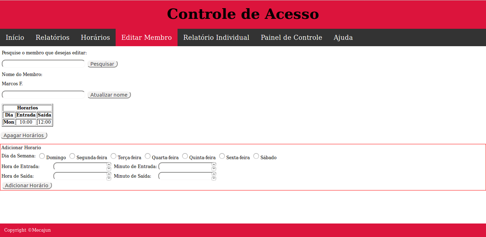
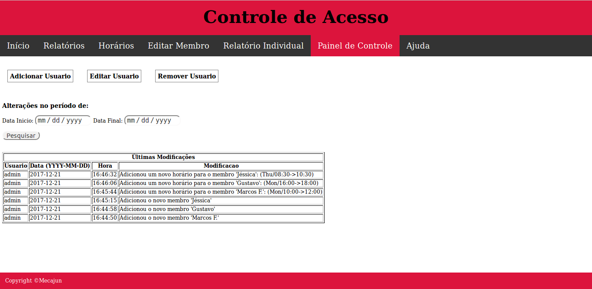
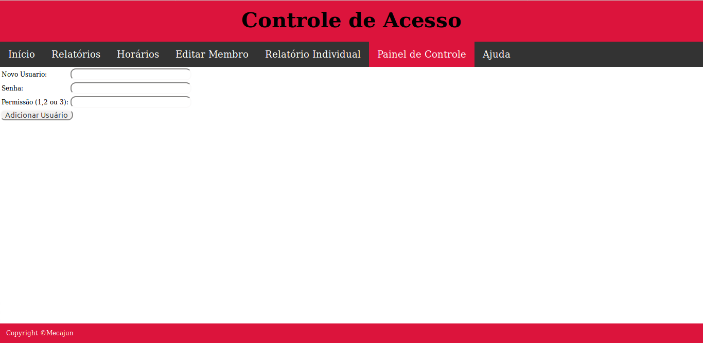
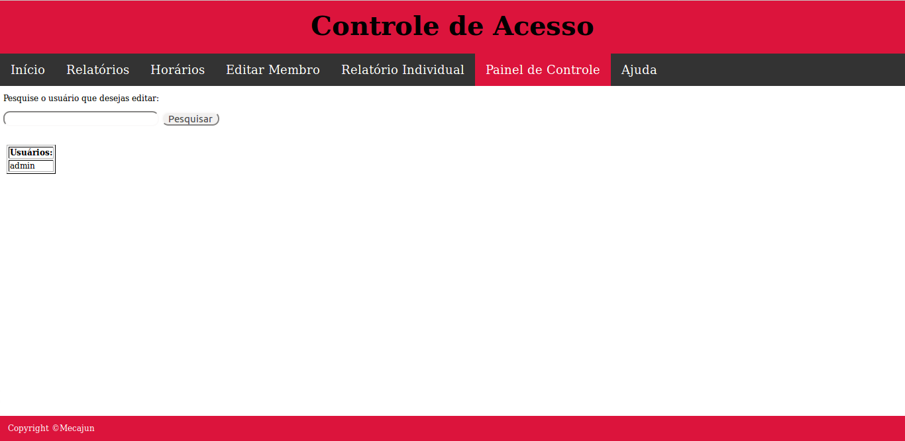
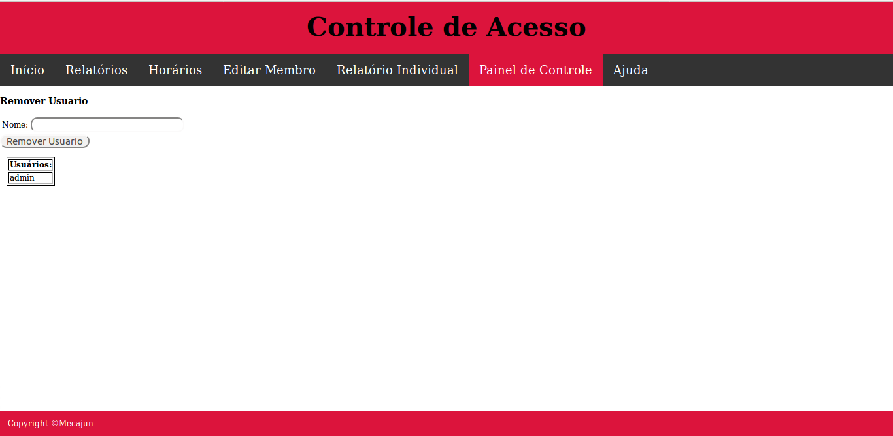
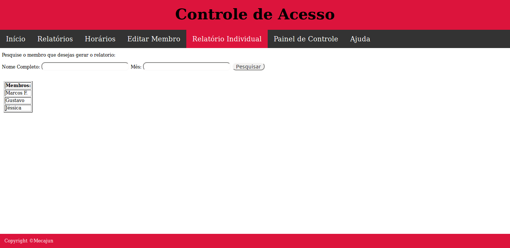

Horários |
Editar MembroAdicionarEditar Remover |
Painel de ControleAdicionarEditar Remover |
Relatório Individual |
A página de horários serve para verificar o horário de trabalho dos membros.
Esta é a página responsável pelo gerenciamento dos membros da EJ.
Ao entrar nesta página, estas 3 opções estarão disponiveis.
Nesta página, os membros poderão ser adicionados. Para tal, deve-se preencher os campos abaixo.
Para cadastrar uma digital a um membro, basta seguir as instruções na tela LCD até o LED alternar em sequência as cores azul, verde e vermelho. Pode-se cadastrar somente um membro por vez. Deve-se cadastrar uma digital para ele antes de adicionar outro membro.
Para editar um membro, basta clicar em "Editar Membro" e mudar os campos que desejar.
 Esta pagina é destinada a ver alterações feitas por usuários do sitema e a adicionar, editar e excluir usuários.
Cliclando em "Adicionar", podemos adicionar um novo usuário. Para isso, basta preencher os campos da foto. Deve-se prestar atenção aos níveis de permissões, no qual uma permissão maior permite editar ou excluir usuários com permissões menores.
Primeiro, deve-se pesquisar o usuário a ser alterado.
Após pesquisar o usuário a ser alterado, deve-se editar o que desejar.
Para excluir um usuário. deve-se pesquisá-lo, clicar em "Excluir" e confirmar esta escolha.
O relatório individual permite ao usuário obter um resumo do mês de um membro específico (Ponto de entrada e saída, hora extra, ...). Para gerar o relatório basta digitar o nome do membro, selecionar o mês desejado e clicar no botão pesquisar.
